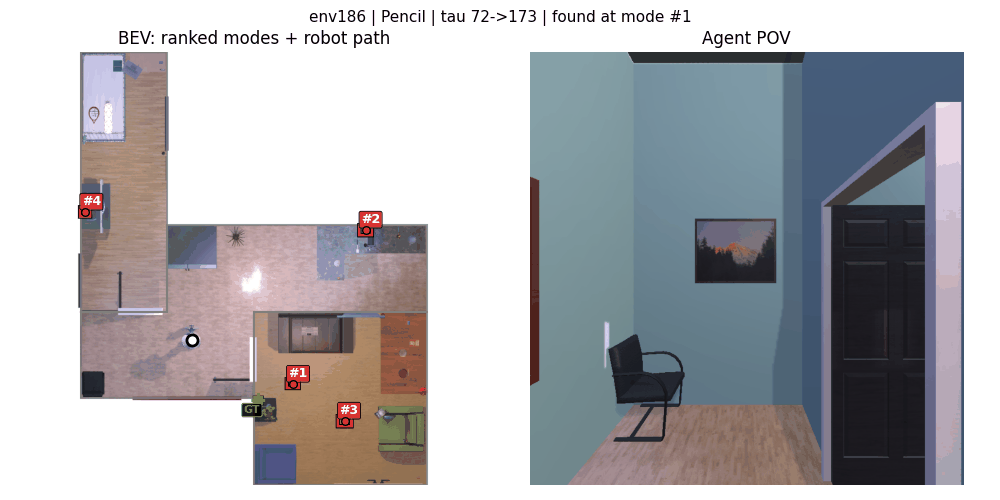

Downstream Task: Object Navigation
We deploy FlowMaps on dynamic Object Navigation (ObjNav), our primary downstream application. Given a queried object, FlowMaps predicts where it is likely to have moved and directs the robot toward the most probable locations, recovering gracefully from failed retrievals by reasoning over the full multimodal distribution.




Qualitative ObjNav rollouts. Left: bird's-eye view with FlowMaps' ranked predicted modes (#1–#4), the ground-truth object location (GT) and the robot's path. Right: the agent's point of view as it visits the predicted locations in order until the object is found.
| Method | SR@1 ↑ | SR@5 ↑ | SR@10 ↑ | mSR ↑ | SPL@1 ↑ | SPL@5 ↑ | SPL@10 ↑ | mSPL ↑ | Path (m) ↓ | Steps ↓ |
|---|---|---|---|---|---|---|---|---|---|---|
| Habit #1 — location preferences | ||||||||||
| Naive LLM | 42.13 | 59.34 | 63.77 | 57.44 | 33.54 | 38.40 | 39.03 | 37.80 | 12.01 | 195.1 |
| TAP-LGX | 35.25 | 57.05 | 62.62 | 54.03 | 28.88 | 40.03 | 44.00 | 43.62 | 10.62 | 193.6 |
| OSG+SP | 18.69 | 56.89 | 64.10 | 51.85 | 15.34 | 31.46 | 33.21 | 29.29 | 12.99 | 224.3 |
| OSG+LLM | 42.79 | 62.46 | 63.44 | 60.13 | 34.65 | 44.03 | 44.27 | 42.90 | 8.38 | 131.9 |
| CEG+SP | 22.30 | 58.03 | 64.75 | 52.66 | 18.16 | 33.32 | 34.82 | 30.98 | 12.42 | 212.7 |
| CEG+LLM | 42.95 | 62.62 | 63.61 | 60.29 | 34.93 | 44.57 | 44.81 | 43.40 | 8.00 | 126.3 |
| SGM | 48.36 | 69.18 | 71.80 | 67.26 | 38.74 | 46.52 | 46.84 | 45.64 | 8.82 | 137.4 |
| HOMER | 46.72 | 67.54 | 69.84 | 64.46 | 37.31 | 44.59 | 44.98 | 43.62 | 9.29 | 145.9 |
| FlowMaps (ours) | 57.70 | 71.15 | 73.62 | 69.26 | 45.31 | 49.52 | 49.72 | 48.95 | 9.01 | 111.1 |
| Habit #2 — balanced routine | ||||||||||
| Naive LLM | 39.02 | 58.52 | 60.66 | 55.46 | 31.30 | 37.95 | 38.21 | 36.94 | 8.72 | 135.2 |
| TAP-LGX | 34.26 | 54.92 | 61.64 | 53.57 | 28.12 | 40.73 | 43.18 | 39.47 | 10.98 | 199.6 |
| OSG+SP | 19.18 | 57.38 | 66.07 | 52.69 | 15.74 | 32.03 | 34.49 | 29.99 | 13.37 | 233.3 |
| OSG+LLM | 36.89 | 47.38 | 50.16 | 46.43 | 29.85 | 34.97 | 35.69 | 34.40 | 8.18 | 129.5 |
| CEG+SP | 22.46 | 58.36 | 65.74 | 53.08 | 18.31 | 33.39 | 35.27 | 31.17 | 12.29 | 212.6 |
| CEG+LLM | 37.38 | 48.20 | 50.98 | 47.25 | 30.11 | 35.47 | 36.17 | 34.90 | 8.02 | 127.5 |
| SGM | 47.54 | 66.23 | 68.52 | 63.85 | 38.07 | 44.83 | 45.14 | 43.94 | 7.76 | 117.6 |
| HOMER | 41.48 | 67.38 | 69.18 | 62.90 | 33.59 | 41.65 | 41.85 | 40.37 | 8.79 | 135.4 |
| FlowMaps (ours) | 50.49 | 66.56 | 67.21 | 63.92 | 41.18 | 46.51 | 46.59 | 45.72 | 7.55 | 113.5 |
| Habit #3 — highly dynamic routine | ||||||||||
| Naive LLM | 41.15 | 56.23 | 61.48 | 55.46 | 33.52 | 38.31 | 39.21 | 37.89 | 9.45 | 145.1 |
| TAP-LGX | 36.72 | 57.05 | 64.10 | 55.61 | 29.82 | 42.30 | 44.86 | 40.97 | 9.37 | 163.0 |
| OSG+SP | 15.90 | 56.23 | 65.25 | 51.21 | 12.95 | 31.00 | 33.31 | 28.55 | 11.92 | 207.0 |
| OSG+LLM | 38.52 | 54.26 | 55.74 | 52.33 | 31.72 | 38.97 | 39.33 | 38.04 | 7.68 | 115.7 |
| CEG+SP | 18.52 | 57.21 | 64.43 | 52.21 | 14.85 | 31.48 | 33.30 | 29.37 | 11.54 | 199.2 |
| CEG+LLM | 38.03 | 54.10 | 55.74 | 52.00 | 31.23 | 38.59 | 38.93 | 37.62 | 7.91 | 119.1 |
| SGM | 27.21 | 62.62 | 65.41 | 56.84 | 22.19 | 33.64 | 34.02 | 31.84 | 12.24 | 198.1 |
| HOMER | 38.03 | 62.95 | 65.74 | 58.93 | 30.29 | 38.55 | 38.94 | 37.25 | 11.51 | 186.9 |
| FlowMaps (ours) | 50.98 | 66.72 | 68.20 | 64.39 | 41.07 | 45.99 | 46.17 | 45.30 | 7.90 | 117.4 |
Dynamic Object Navigation results, grouped by the three habits, over 600+ episodes in disjoint, previously unseen environments. SR / SPL are reported at K = 1, 5, 10 candidate locations, along with mean SR / SPL, path length and step count. Bold marks the best per column; FlowMaps rows are highlighted.